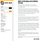

Massage doesn’t embed the network effect, haircut does

When I was writing this article I found that it was a meme to take a screenshot of one article on this blog and to write about it using the same template format of the first article. As you can remember my article about screenshot story I remembered this idea I went to the blog to see if I can grasp an article and write about it. That’s what I did and once on the blog the first words I thought about was Disruptive and Technology, then I searched about these words and ended reading this article bellow

Like what often happens when we consume online content and what click baiters want us to do, I clicked on the link of the blog’s article and learned other new words, names, and concepts like Emergent Democracy, an interesting author and professor like Clay Shirky — thoughts about the all of fame late professor Clayton Christensen triggered by the name Clay —
This hopping from content to online content led me to add other books to my reading stack. Maybe I need better Reading Experience Management software to better handle this reading stack with the help of Artificial intelligence that will allow me to get good actions out of my readings. But all of this to remind you or to notify you that this is how peer-to-peer leadership happens online with the concept of THIS and people like us do things like this. Pointing person to person, idea to idea, concept to concept, word to word,… like the linked list data structure that I had to revisit today by viewing this video
and reading this book about C++,
a programming language I abandoned years ago that I am now very interested to rediscover and remaster. This will happen with a bit of practice and I started practicing again C++ months ago. here is a tweet that can prove it
but this time with a better understanding of the science behind words and languages from both a psychological and cognitive standpoint and a technological one that deals with how ideas spread. Of course, the network effect help ideas spread. That’s right nobody asks where you got a massage so a massage does not embed the network effect while hairdressing does. There is now this trending event about massage in my country. Hope I have nothing to do with it. It does not help a politician spread his message by going to a massage seance but by having a nice haircut is more likely. that’s just my point about this local event. Excuse me for bothering you with the news of my country. Let's come back to the topic with this screenshot of my browsing history which is a clue about how ideas spread and this is also like a linked list data structure
Do you know how to implement a browsing history with data structure?
If this IDE is ready you could demonstrate your knowledge about data structure here right now.
The medium is the message but massage doesn't embed the network effect explains this video below